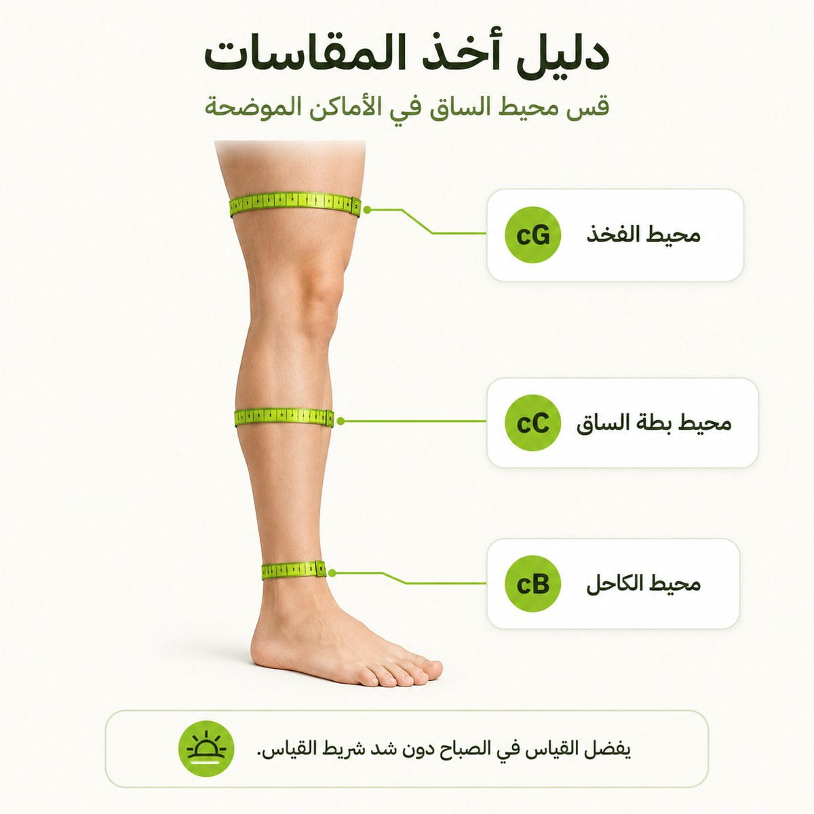

اعثر على المقاس المناسب لساقيك.
يعمل الضغط الطبي بأفضل صورة عندما يكون المقاس صحيحًا. ثلاثة قياسات بسيطة تكفي لاختيار مقاس ميدبريس المناسب.
قِس في الصباح.
قِس في بداية اليوم قبل أن تتورّم الساقان، مع شدّ شريط القياس برفق دون ضغط على الجلد.

cB — الكاحل
قِس محيط أنحف نقطة في الكاحل، فوق عظمة الكاحل مباشرة.
cC — بطة الساق
قِس محيط أعرض جزء من بطة الساق.
cG — الفخذ
للموديلات بطول الفخذ: قِس محيط أعرض جزء من الفخذ.
طابق قياساتك مع الجدول.
نطاقات المحيط بالسنتيمتر، كما هي مطبوعة على عبوة ميدبريس الحالية.
| القياس | S | M | L | XL | XXL |
|---|---|---|---|---|---|
| cB — الكاحل (سم) | 19–21 | 22–24 | 25–27 | 28–30 | 30–32 |
| cC — بطة الساق (سم) | 28–34 | 32–38 | 36–42 | 40–46 | 42–50 |
| cG — الفخذ (سم) | 42–57 | 48–64 | 54–71 | 60–78 | 65–85 |
المقاس XXXL متاح، وتُقدَّم نطاقات قياساته عند الطلب.
| طول الساق | قصير | قياسي | طويل |
|---|---|---|---|
| LD (سم) | 34–38 | 39–44 | 45–50 |
| LG (سم) | 62–71 | 72–83 | 84–89 |
LD وLG هما قياسا طول الساق وفق جدول مقاسات ميدبريس. وتتوفّر المقاسات القصيرة والطويلة عند الطلب الخاص.
بين مقاسين؟
قياس الكاحل (cB) هو الأهم في الضغط المتدرّج. إذا وقعت قياساتك بين مقاسين، فاتبع نصيحة مختصّ الرعاية الصحية أو الصيدلي.
الأطوال القصيرة والطويلة
المقاسات القصيرة والطويلة متاحة عبر الطلبات الخاصة — راجع جدول أطوال الساق أعلاه.
تأكد من الثبات الصحيح.
- مفرود من المقدمة إلى الحافةبلا تجاعيد أو طيّات أو تكتّل — خاصة عند الكاحل.
- الحافة مستقرة تحت الركبةتثبت في مكانها دون أن تضغط أو تنزلق.
- ثابت لكن مريحالضغط داعم — لا مؤلم ولا مسبِّب للتنميل.
ما زلت غير متأكد من مقاسك؟
يمكن للصيدلي أو مختصّ الرعاية الصحية قياس ساقيك والتوصية بالمقاس ومستوى الضغط المناسبين.